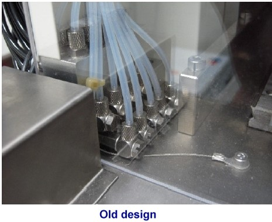
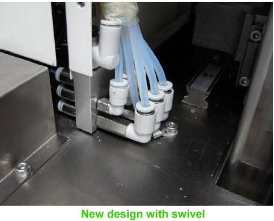

Service History
Subject: Swivel connector for NS7000 Index Arm tubing broken
Handler Model: NS-7000
Controller: RC520
Date: 22 Apr 2009
Symptom
NS-7000 Index Arm 1 & 2 air tubings broken for sites F,G, H on both Index Arms.
Device pickup error or Device drop error or low vacuum error at Index Arm.
Issue occurred around Mar 2008 for UTL NS-7000.
Customers affected for NS-7000 : UTAC/UTL/SCS/AMKOR/EEMS
Action
22 Apr 2009 email from Hidaka-san.
|
 |
|
 |
Cause
Remarks
Similar case in 0042-NS7K.